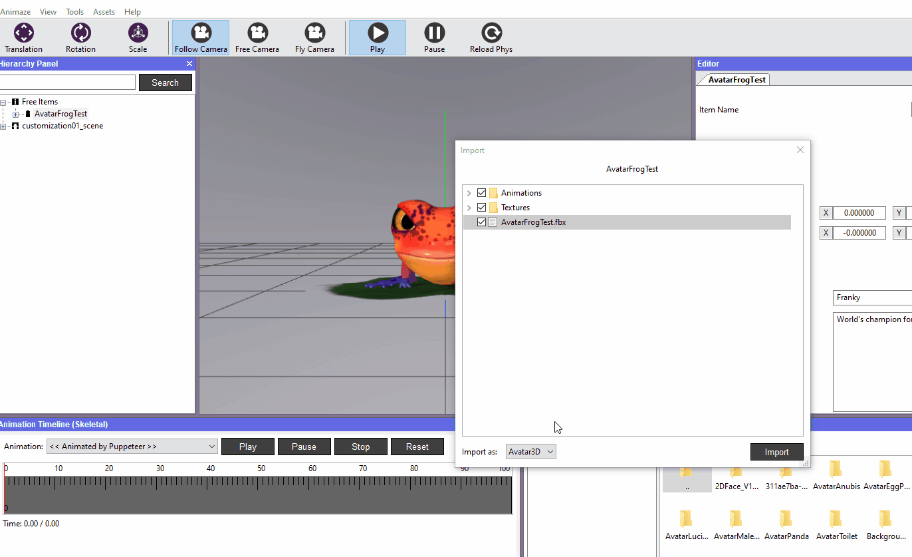
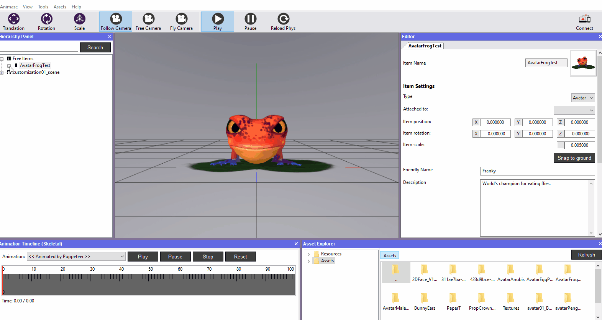
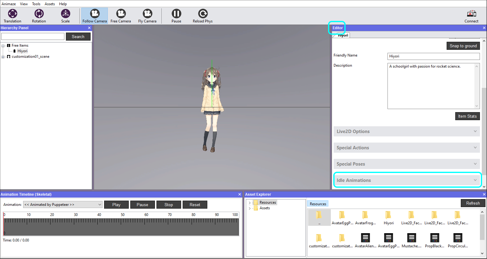
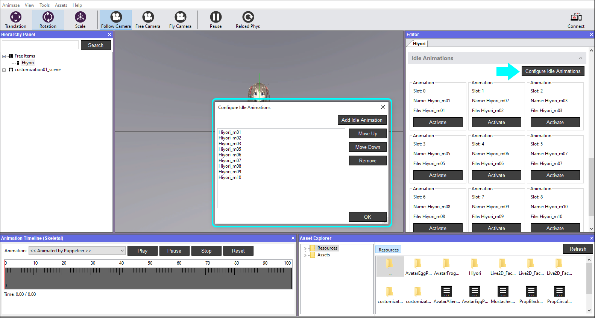
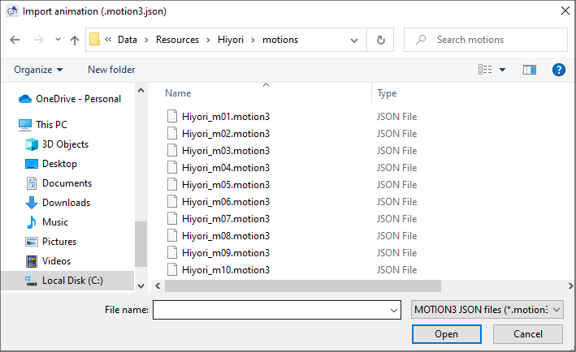
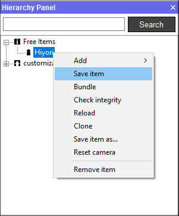
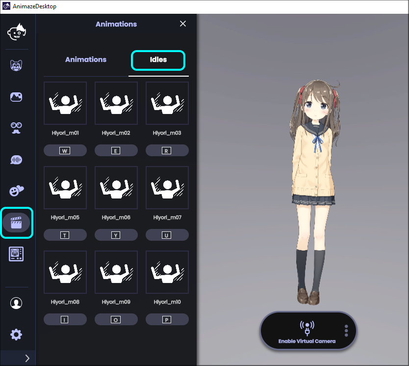

Animaze Editor Workflow
The Animaze Editor Workflow can be split into two directions. Firstly, is adding and importing external 3D models, with current support only for .fbx format. Soon the Animaze Editor will also support the .VRM format.
Secondly, is customizing and creating resources from within the editor, which include the materials editing, level editing, props editing, scale editing, particle systems, sounds, physics (coming in future releases) etc.
Model Importing
Importing a 3D or 2D model (.fbx format) creates an Animaze friendly resource that's ready to use at runtime by Animaze SDK powered applications (including 1st party Holotech Studios apps and 3rd parties).
The selected source files (models and textures) are copied to the Assets/ folder of the Editor (find it at <AnimazeEditorInstallationDir>\Data\Assets\), then they go through the import process which outputs Animaze resources placed in the Resources/ folder.
The VRM format import is currently an in progress feature and we will provide more information on the process soon.
A small summary:
• Assets/ folder contains the sources of the imported avatars and props
• Resources/ folder contains the runtime ready versions of the imported avatars and props, with each item having a separate folder.
The current import process has some rules and limitations:
1. Animaze expects the current files and folders structure for an item (avatar/prop):
• Animations/ → folder with .fbx animations (single clip per file)
• Textures/ → folder with textures
• itemGeometry.fbx → geometry file named as desired.
Note! The Geometry file should contain only geometry and blendshapes info, as skeletal animation data is ignored.
2. Once an item is imported, if you want to re import it you need to delete the following files from the item's Resources/ folder:
• *.model file from the root of the item's folder – this is the case for all reimports
• *.anim and *.animtree files from Animations/ folder of the item's folder – if you want to re-import animations. You can also delete specific files if you need to re-import specific animations
• *.mesh files from the Meshes/ folder of the item's folder – if you want to re-import geometry
• *.skel file from Skeleton/ folder of the item's folder – if there are changes to the skeleton of the geometry
• *.ktx files from Textures/ folder of the item's folder – if you want to re-import the texture files
Pro Tip! Once an avatar is imported, you can adjust its textures/animations/geometry from the Assets/ folder. Animaze Editor will automatically see the change and prompt you to re-import the asset so you can preview it as fast as possible. This works only when Animaze Editor is running, while when it’s not running, will not be automatically reimported. Also, see below how re-importing single-files works.
Re-importing Assets
Re-importing single files, such as a texture or a modified animation is quite simple. In animaze Editor, select the Import type you need, uncheck the .fbx source of the item, then select whichever file you need to reimport, be it textures or animation clips.

To use the re-imported texture select the needed mesh in the Hierarchy Panel, click on the texture box and then select it from the Texture Picker. It will automatically be converted to .ktx format and placed into the Resource/Avatar’s folder.

Skybox Importing
The Animaze Editor currently supports importing *.hdr for the skybox and environment mapping textures.
Skybox 2D Importing
The Animaze Editor also supports creating a skybox with a 2D backdrop and environment mapping textures. You can import a *.hdr for the skybox itself and a .bmp, .tga, .png and .jpg backdrop image. In addition, you can import a Live2D model (*.model3.json) as a background image to get an animated 2D effect.
Resource Creation
Some Animaze resources cannot be imported, but can be created within the editor itself:
- Particle Systems
- 3D Scenes
- Sound sources
- Emotes
- Background with overlays
- Customized lights setup
Scene management
Animaze Editor has a simplified scene manager that is more focused around the avatar, although powerful enough to implement a full 3D scene with props, lighting setup, particle systems, skybox etc.
Items in Animaze Editor can be placed in two places in the Hierarchy Panel:
➢ either Free Items, where they can be edited like in any model viewer and editor
➢ either part of a Scene (called Default Scene), which makes all transform values (position, orientation and scale) be relative to the scene and also loads them every time the scene is loaded, if previously saved, same as a game level.
Avatars are not saved in a scene, even if they are attached at runtime, when saved to disk they will be removed. Use Spawn Locations as hints for the system to place the Avatar at a desired location in the Scene.
Idle Types for 2D and 3D avatars
The Animaze SDK supports multiple idle animations for either 2D or 3D avatars with the option of changing between animations at runtime. The Animaze Editor allows changing the idle types of an avatar, which can then be saved and bundled (optionally) into a new *.avatar file so the animations can be used in Animaze Desktop too.
Adding idle animations for 2D Avatars
In the Animaze Editor, idle Animations can be found in the Editor Panel. Having selected the avatar in the Hierarchy Panel, in the right panels we can see the Idle Animations option, along with Special Actions and Special Poses.
Note that bundled avatars cannot have their animations modified.

When configuring idle animations we can either add, remove or reorder existing ones. We can reorder the animations in the same configuration window where we’re adding or removing them. Playing with the Move up and Move down options will reflect this.

For a 2D avatar, adding an animation simply means selecting a *.motion3.json file.

Once the first idle animation is added, you will already see your avatar being animated by it when activating it. By default, without any user selection, the animation system will use the first configured idle animation. This means that if we were to add a second idle animation, the first one would still be playing since new animations get added to the back of the list.
It’s important to note that Live2D avatars also have what’s called the “Idle“ motion group. The animations in this group, if present, will take precedence over any other idle animations. This means that they’ll be added to the idle animations list first (and the first one will be played).
Finally, we simply have to save our changes (to write these settings to the files on the disk) by right-clicking our avatar in the Hierarchy Panel and click on Save Item (alternatively we also can bundle the avatar into a *.avatar file).

Adding idle animations for 3D Avatars
The workflow is exactly the same for 3D avatars as it is for 2D avatars, except that there is not “Idle“ motion group for 3D avatars. The first animation in the list will be played.
Idle types in Animaze Desktop
In Animaze Desktop, idle animations can be used from the Idles tab in the Animations drawer.
